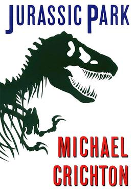

Synopsis: Hannah Stern is a Jewish preteen girl living in the present day. She is bored by her relative's stories about the past, is not looking forward to the Passover Seder, and is tired of her religion. When Hannah symbolically opens the door for the prophet Elijah, she is transported back in time to a shtetl on the Polish/German border in 1942, during World War II. Hannah is not immediately aware of the time period.
White Fang
Genre: Adventure
Author: Jack London
Synopsis: The story details White Fang's journey to domestication in Yukon Territory and the Northwest Territories during the 1890s Klondike Gold Rush. It is a companion novel (and a thematic mirror) to London's best-known work, The Call of the Wild (1903), which is about a kidnapped, domesticated dog embracing his wild ancestry to survive and thrive in the wild.
Avatar: The Last Airbender
Genre: Fantasy, Adventure
Author: Michael Dante DiMartino & Bryan Konietzko
Synopsis: The season revolves around the protagonist Aang and his friends Katara and Sokka going on a journey to the North Pole to find a Waterbending master to teach Aang and Katara. The Fire Nation is waging a seemingly endless imperialist war against the Earth Kingdom and the Water Tribes, following the genocide of the Air Nomads one hundred years ago. Aang, the current Avatar, must master the four elements (Air, Water, Earth, and Fire) to end the war.

Jurassic Park
Genre: Sci-fi
Author: Michael Crichton
Synopsis: A cautionary tale about genetic engineering, it presents the collapse of a zoological park showcasing genetically recreated dinosaurs to illustrate the mathematical concept of chaos theory and its real-world implications. A sequel titled The Lost World, also written by Crichton, was published in 1995. In 1997, both novels were republished as a single book titled Michael Crichton's Jurassic World.
To Kill a Mockingbird
Genre: Southern Gothic, Bildungsroman
Author: Harper Lee
Synopsis: Despite dealing with the serious issues of rape and racial inequality, the novel is renowned for its warmth and humor. Atticus Finch, the narrator's father, has served as a moral hero for many readers and as a model of integrity for lawyers. The historian Joseph Crespino explains, "In the twentieth century, To Kill a Mockingbird is probably the most widely read book dealing with race in America, and its main character, Atticus Finch, the most enduring fictional image of racial heroism."